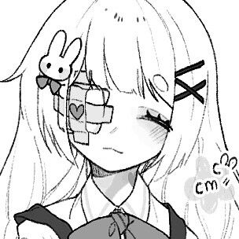
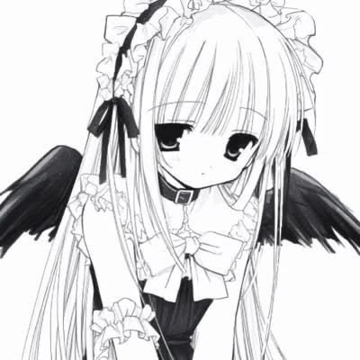

﹌﹌﹌﹌﹌﹌﹌﹌﹌﹌﹌﹌﹌﹌﹌⋆୨♡୧⋆﹌﹌﹌﹌﹌﹌﹌﹌﹌﹌﹌﹌﹌﹌
¡Tu primer paso en el japonés empieza aquí! El Hiragana es el alfabeto base y la columna vertebral del idioma. Con él aprenderás a pronunciar tus primeras palabras y a escribir las partículas gramaticales. ¡Empieza tu viaje hoy mismo!
﹌﹌﹌﹌﹌﹌﹌﹌﹌﹌﹌﹌﹌﹌﹌⋆୨♡୧⋆﹌﹌﹌﹌﹌﹌﹌﹌﹌﹌﹌﹌﹌﹌

Domina los sonidos fundamentales del japonés. El Hiragana consta de 46 caracteres principales que representan sílabas fonéticas. Es el sistema que usan los niños en Japón y el que te abrirá las puertas para entender la estructura del idioma. En este módulo practicarás su trazo, lectura y reconocimiento interactivo hasta que los domines por completo.
﹌﹌﹌﹌﹌﹌﹌﹌﹌﹌﹌﹌﹌﹌﹌⋆୨♡୧⋆﹌﹌﹌﹌﹌﹌﹌﹌﹌﹌﹌﹌﹌﹌

¿Listo para escribir tu primera palabra? Aprender Hiragana es como aprender a andar en bicicleta: al principio requiere atención, pero pronto se vuelve automático. Completa las lecciones diarias, desafía a tu memoria con nuestros cuestionarios y asienta las bases de tu fluidez.